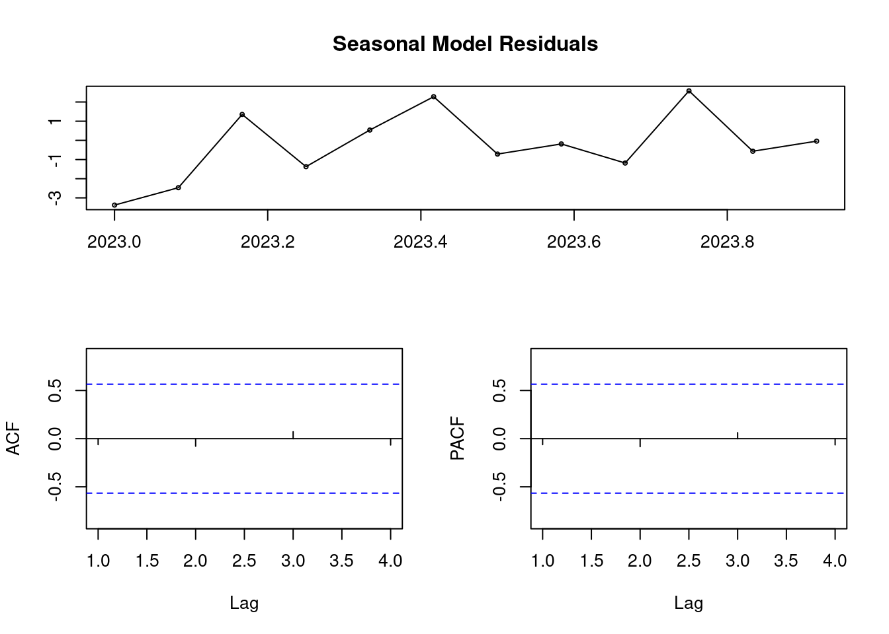

# Librerias
library(TTR)
library(forecast)
library(tseries)
library(dplyr)Series Temporales
La siguiente técnica a estudiar son las Series Temporales, que suele ser interesante para ver cómo avanzan temporalmente ciertos parámetros y tratar de realizar predicciones de cara al futuro.
Añadir valores temporales
Como en nuestro conjunto de datos no tenemos ningún indicador de temporalidad, vamos a crear un caso ficticio:
Supongamos que queremos ver la popularidad que ha ganado Instagram en el último año. Lo que haremos será asumir que la información que contiene nuestro dataset es sobre todas las cuentas que se han registrado en 2023.
Vamos a tratar de estudiar, pues, cuántos usuarios se unieron cada mes, cuánta actividad han ido teniendo, etc.
Para ello, voy a añadir tres columnas más al dataset:
Fecha en la que se unieron a Instagram.
Mes que ganaron más seguidores y su cantidad.
Estos valores voy a generarlos aleatoriamente.
Fecha en la que se unieron a Instagram
data_ts <- read.csv("train.csv")
attach(data_ts)# Creo una secuencia de fechas desde enero de 2023 hasta diciembre de ese mismo año
fechas <- seq.Date(as.Date("2023-01-01"), as.Date("2023-12-31"), by = "day")
# Le doy a cada fila una fecha
set.seed(12)
data_ts <- data_ts %>%
mutate(creation.date = sample(fechas, nrow(data_ts), replace = TRUE))# Compruebo que se ha insertado correctamente
str(data_ts$creation.date) Date[1:576], format: "2023-12-12" "2023-12-02" "2023-09-04" "2023-12-13" "2023-06-23" ...Posteriormente, voy a crear una lista que contengan para cada mes el número de personas que se unieron.
usuarios_por_meses <- data_ts %>%
group_by(Month = as.integer(format(creation.date, "%m"))) %>%
summarise(users_joined = n())
usuarios_por_meses# A tibble: 12 × 2
Month users_joined
<int> <int>
1 1 38
2 2 37
3 3 47
4 4 46
5 5 52
6 6 58
7 7 53
8 8 49
9 9 44
10 10 55
11 11 48
12 12 49Fecha en que ganaron más seguidores y su cantidad
En este caso, no me basta con asignarle una fecha aleatoria, pues debo de asegurarme de que este mes no sea anterior al de creación de la cuenta. Para ello, indico en sample que el primer valor válido es la fecha de creación.
data_ts <- data_ts %>%
rowwise() %>%
mutate(date_max_followers = as.Date(sample(seq(creation.date, as.Date("2023-12-31"), by="day"), 1)))data_ts <- data_ts %>%
rowwise() %>%
mutate(max_followers = sample(1:X.followers, 1))También vamos a calcular la cantidad de seguidores total de cada mes. Esto será útil para estudiar la actividad mensual de los usuarios en general, pues que el número de nuevos seguidores sea alta es indicador de que hay muchos usuarios interactuando con otras cuentas.
max_usuarios_por_meses <- data_ts %>%
group_by(Month = as.integer(format(date_max_followers, "%m"))) %>%
summarise(max_followers = sum(max_followers))
max_usuarios_por_meses# A tibble: 12 × 2
Month max_followers
<int> <int>
1 1 29
2 2 739
3 3 5381856
4 4 804
5 5 232530
6 6 3959113
7 7 160658
8 8 21936
9 9 26709
10 10 627543
11 11 1350470
12 12 4166074Cantidad de usuarios registrados
Lo primero que podemos observar es el número de usuarios que se registraron mensualmente.
ts1<- ts(usuarios_por_meses[2], frequency=12, start=c(2023, 1))
ts1 Jan Feb Mar Apr May Jun Jul Aug Sep Oct Nov Dec
2023 38 37 47 46 52 58 53 49 44 55 48 49plot.ts(ts1)Es fácil observar que no hay estacionalidad en esta serie. En el caso de que no se apreciase a simple vista, podríamos utilizar el test ADF.
adf_test <- adf.test(ts1)
if (adf_test$p.value < 0.05) {
cat("The time series is stationary.\n")
print(adf_test)
} else {
cat("The time series is not stationary. You may need to difference it.\n")
}The time series is not stationary. You may need to difference it.aggregate(ts1)Time Series:
Start = 2023
End = 2023
Frequency = 1
users_joined
[1,] 576Descomponiendo la serie
Para ver si existe alguna tendencia en la serie, vamos a proceder a descomponerla.
# Aplicando SMA
ts1.sma2 <- SMA(ts1, n = 2)
ts1.sma5 <- SMA(ts1, n = 5)
ts1.sma9 <- SMA(ts1, n = 9)
# Plot de las series
par(mfrow = c(2, 2))
plot.ts(ts1)
plot.ts(ts1.sma2)
plot.ts(ts1.sma5)
plot.ts(ts1.sma9)Con esto hemos conseguido apreciar cierta tendencia ascendente en la serie, principalmente a partir del SMA5.
Modelo HoltWinters
holt <- HoltWinters(ts1, beta = FALSE, gamma = FALSE)
holtHolt-Winters exponential smoothing without trend and without seasonal component.
Call:
HoltWinters(x = ts1, beta = FALSE, gamma = FALSE)
Smoothing parameters:
alpha: 0.7102409
beta : FALSE
gamma: FALSE
Coefficients:
[,1]
a 49.07538De estos resultados, nos interesa comprender el valor de alpha que, al ser de 0.71, nos dice que las observaciones pasadas no tienen una influencia excesivamente significativa en las predicciones.
plot(holt)Con el uso de la función forecast podemos ver las predicciones para los próximos años que obtenemos con este modelo.
plot(forecast(holt))# Suma residual de cuadrados
holt$SSE[1] 377.1806Modelo ARIMA
También podemos tratar de crear un modelo con ARIMA para predecir cómo avanzarán estos valores durante el próximo año.
# Creo el modelo
model <- arima(ts1, order = c(0, 0, 20))
summary(model)
Call:
arima(x = ts1, order = c(0, 0, 20))
Coefficients:
ma1 ma2 ma3 ma4 ma5 ma6 ma7 ma8
0.5179 0.3978 0.0848 -0.4843 -0.9476 -1.3051 0.3649 -0.1508
s.e. 3.7678 2.3737 3.6455 3.0056 2.0156 4.7509 1.2459 2.5796
ma9 ma10 ma11 ma12 ma13 ma14 ma15 ma16
0.0475 -0.0994 0.1538 -0.0392 -0.2088 1.3536 0.8391 0.5430
s.e. 2.8580 3.5001 3.4184 4.0549 4.0401 3.6190 2.4645 1.7683
ma17 ma18 ma19 ma20 intercept
-0.2427 -0.2742 -0.6742 -0.8760 47.9542
s.e. 2.0186 2.1474 1.9061 3.6936 0.9154
sigma^2 estimated as 2.969: log likelihood = -33.02, aic = 110.04
Training set error measures:
ME RMSE MAE MPE MAPE MASE
Training set -0.2630437 1.72295 1.388404 -0.9736737 3.063273 0.2679377
ACF1
Training set -0.06147511# Hago las predicciones para los próximos 12 meses
forecast_usuarios_registrados <- forecast::forecast(model, level=c(95), h=12)
plot(forecast_usuarios_registrados)# Media por meses de usuarios que se estima que se registrarán
forecast_usuarios_registrados$mean Jan Feb Mar Apr May Jun Jul Aug
2024 49.64213 45.70380 42.23315 38.15777 49.72670 47.06028 49.98531 50.57037
Sep Oct Nov Dec
2024 50.85841 48.87311 45.58468 50.27945# Residuos
forecast_usuarios_registrados$residuals Jan Feb Mar Apr May Jun
2023 -3.3760871 -2.4692735 1.3524180 -1.3727414 0.5396656 2.2778460
Jul Aug Sep Oct Nov Dec
2023 -0.7143588 -0.1864591 -1.1825920 2.5822336 -0.5665106 -0.0406656tsdisplay(residuals(model), main = "Seasonal Model Residuals")
Actividad mensual
También puede ser interesante estudiar cómo han ido interactuando estos usuarios durante los meses. Para ello, podemos ver que si ha habido mucho aumento en los números de seguidores, la actividad ha sido mayor.
ts2 <- ts(max_usuarios_por_meses[2], frequency=12, start=c(2023, 1))
ts2 Jan Feb Mar Apr May Jun Jul Aug Sep
2023 29 739 5381856 804 232530 3959113 160658 21936 26709
Oct Nov Dec
2023 627543 1350470 4166074plot.ts(ts2)Modelo predictivo
Ya hemos visto que el modelo ARIMA nos proporciona mejores resultados, por lo que será el que utilicemos para esta serie.
# Creo el modelo
model2 <- arima(ts2, order = c(0, 0, 20))
summary(model2)
Call:
arima(x = ts2, order = c(0, 0, 20))
Coefficients:
ma1 ma2 ma3 ma4 ma5 ma6 ma7 ma8
-0.8568 -0.5056 0.6206 -0.8640 0.5618 -0.0159 -0.2195 1.0064
s.e. 1.4554 1.9685 1.6826 1.2115 1.5767 1.5556 1.6877 1.9266
ma9 ma10 ma11 ma12 ma13 ma14 ma15 ma16
0.3442 -0.9977 -0.6680 0.7599 -0.6122 0.2437 0.4635 -0.5355
s.e. 1.6661 1.3751 1.8677 1.2994 1.4443 1.9772 1.9571 1.5579
ma17 ma18 ma19 ma20 intercept
1.0273 -0.1439 -0.8968 0.2904 1203218.6
s.e. 1.5912 1.8637 1.5525 1.2430 55986.4
sigma^2 estimated as 2.896e+11: log likelihood = -184.25, aic = 412.5
Training set error measures:
ME RMSE MAE MPE MAPE MASE
Training set 108963.6 538181.7 451221.6 -116739.2 120273.6 0.2176707
ACF1
Training set -0.0001858907# Hago las predicciones para los próximos 12 meses
forecast_actividad <- forecast::forecast(model2, level=c(95), h=12)
plot(forecast_actividad)Según estas predicciones, la actividad no será tan elevada durante el año 2024, aunque sufrirá menos desviaciones que en el año anterior.
Conclusiones
Como consideraciones finales, es importante tener en cuenta que series temporales es más adecuado para conjuntos de datos con otras características. Sin embargo, esta exploración nos ha permitido comprobar su enorme utilidad y la amplitud de información que se puede extraer con ellas.